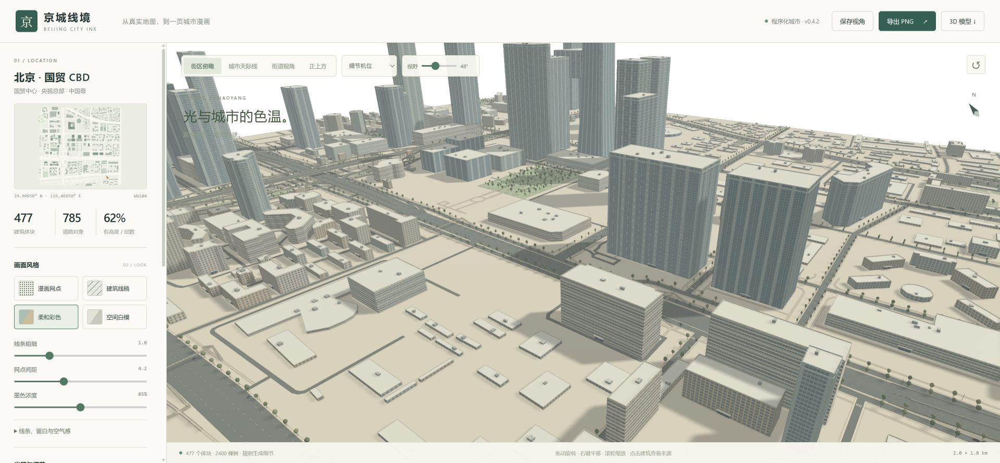
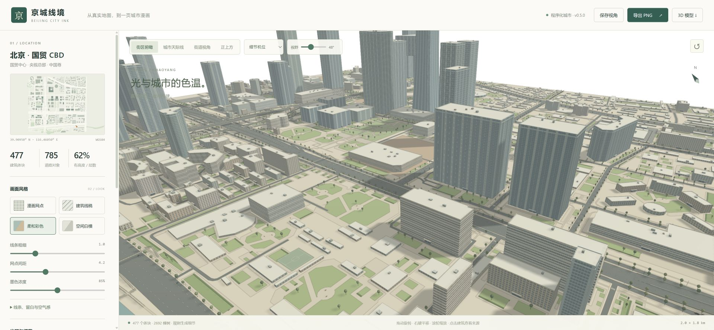
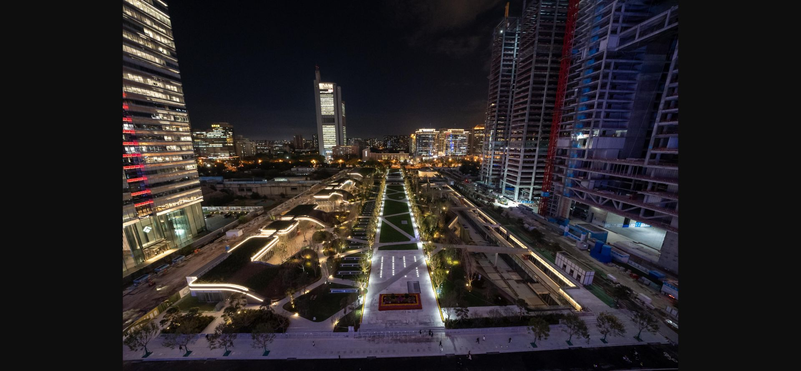

BEIJING CITY INK / LANDSCAPE ENGINE
从空白地面，到有层次的城市场地。
本轮在同一北京 CBD 范围补足场地：先恢复 OSM 已有用途，再用四类通用模板处理缺数据的空间。照片用于判断草坪、树阵、铺装的比例；新增布局是规则示意。
OSM 补充对象48 个其中 23 个明确场地对象；另有用途背景与喷泉
规则场地 / 大空隙庭园604 / 28入口留白、绿带、草坪与座椅
未覆盖采样估计46.5% → 25.7%同一补充数据下，约12米采样；非像素空白率


v0.4.2v0.5.04 组前后截图使用相同机位、FOV、种子、光照与1920×889画幅。旧版来自冻结的v0.4.2生产构建；新版包含补充OSM数据和场地引擎。指标的46.5%基线则已加载补充OSM，二者口径不同。
OSM 有数据，也有遗漏
恢复 4 处原本被解析器忽略的步行广场；扩展查询增加停车场、运动场、树林、花坛、公园与施工地等。商业用地只提供环境语境，不整块铺草。69个场地多边形经建筑、道路等裁切后，51个场地面仍有可见片段。查看抓取与语义审计。
从真实鸟瞰提取的规则
北京日报2024年10月23日报道（CBD管委会供图）的实景显示：草坪被宽步道分割，两侧乔灌木与楼前硬地形成层次。因此模板保留开敞铺装，用低灌木和疏树组织空间。没有把照片作为纹理或通过遥感生成地面边界。

实际查看的鸟瞰照片截图；来源与拍摄时期见原报道。只用于分析，不是本项目生成画面。
| 空间类型 | 模板处理 | 约束 |
|---|
| 办公楼前场 | 宽铺装、单侧/双侧/错位草坪、低灌木、座椅 | 建筑退界与中央示意通道 |
| 楼间庭院 | 沿外墙定向的长草坪与疏树 | 保留孔洞，避免小碎片及相互重叠 |
| 道路退界 | 线性绿带与步行边带 | 避让道路、桥梯与已有场地 |
| 较大空隙 | 倒角边界、宽步道、斜支路与不对称草坪 | 只在有足够净空的残余区域生成，不渲染棋盘网格 |
独立评分与剩余差距
10分制专项人工评分，比较旧版与本轮，不代表实景还原率。完整解释见独立验收。
| 维度 | 旧版 | 本轮 | 依据 |
|---|
| 空白场地的完整度 | 3 | 7.5 | 近景大空白变为铺装、草坪和疏树，俯视更连续；仍有未补全地面及保留施工地。 |
| 地表用途与来源区分 | 3 | 8 | 保留广场、停车、运动、工地与水体用途；内部排布仍是规则示意，不是实景还原率。 |
| 模板布局的自然程度 | 4 | 6.5 | 单侧、错位、双侧与倒角草坪降低重复；同尺度矩形绿带仍较多，缺少真实园林的细致层次。 |
| 漫画中的地面辨识 | 3.5 | 7 | 铺装留白、浅网点草坪和树木可区分；密集低楼周围的地面边线仍偏多。 |
| 净空与几何可靠性 | 6 | 8 | 长椅入口、水洞和标线叠面已修复；实际树中心检查冲突为0，但不是全树冠或所有入口验证。 |
| 画面的留白与安静程度 | 8 | 6.5 | 旧版更空、更安静；新版细节和边线增多，因此此项保留扣分。 |
仍能看出规则化景观设计，漫画地面线条也比旧版更密。入口是预留示意通道，不是实际门位；树木检查覆盖中心和部分净空，不能当作完整树冠碰撞验收。未覆盖区域没有强制种满。照片与OSM时间不同，已知施工地按地图保留。尚未实现自动卫星识别、真实高程或屋顶绿化。
工程与交互验收
88项测试通过，生产构建通过；检查闭合环/水面孔洞、入口与长椅完整占地、道路和已知用地避让、非北京坐标平移旋转、预算与种子。球场标线采用同平面嵌入并共用宿主边界身份，避免细线叠面和双黑边。测试记录 · 构建记录 · 指标 · 独立净空抽查。
「空地景观补全」关闭后保留OSM地表，移除本轮推断模板与内部示意线。开关、恢复和PNG导出已实际检查：交互记录 · 导出PNG。CPU单次场景构建约7.7秒（本机）；不等于交互帧率，未做GPU性能基准。
完整图证